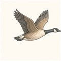

第2巻 だい5わ ── まもりの章とりと ぶつかっても、こわれない
空は、機械だけのものではありません。離陸する機体は時速300km、そこへ体重1kgの鳥が1羽——ぶつかれば、やわらかいはずの鳥が砲弾になります。しかもエンジンの入口では、前話の巨大なファンが先端音速超で回っている。ここに飛び込まれたらどうなるのか。今日は、エンジン設計のいちばん過酷な問い——「壊れ方まで設計する」という世界の話です。
答えを先に言うと、現代のエンジンは鳥を吸い込むことを前提に作られています。ブレードは「軽く・強く・欠けにくく」の三重の注文に応え、それでも壊れる日のために、破片を外へ出さない「檻」が用意されている。まず入口の守りを一周しましょう。
この守りが本物かどうかは、実物のエンジンを使った試験で確かめます。合格しなければ旅客機に載せることはできません。3つの「試験の日」を見てください——最後の1つは、試験場ではなく本番で起きた日です。
よりみちやわらかい鳥が、なぜ凶器になるのか
衝突のミリ秒の世界では、鳥は「やわらかい固体」ではなくほぼ水のかたまりとして振る舞います。ぶつかった瞬間の圧力の理論上限は水撃圧——密度×音速×衝突速度の積——で、相対速度100m/s級なら1,000気圧を超える桁。実物では鳥体の変形や接触条件でそこから下がりますが、それでも桁外れの一撃です。体重1kgでも、この一撃が高速で回るブレードの薄い断面に斜めに入る。だから設計の現場では鳥を流体の弾としてモデル化し（SPHなどの粒子法）、回転するブレードとの連成解析を回してから、実物にニワトリの模擬弾を撃ち込んで答え合わせをします。あなたの分野の言葉で言えば、これは衝撃波と自由表面をもつ、極端な流体構造連成問題です。
よりみちかるく、つよく、かけにくく — ブレード材料の旅
ファンブレードへの注文は互いに喧嘩しています。軽く（回転の遠心荷重と燃費のため）、強く（常時の空力荷重と振動のため）、そして欠けにくく（鳥のため）。中実チタンで始まった歴史は、1984年就航のRB211-535E4で中空ワイドコード翼へ（幅広の翼を中空構造で軽く——RRの金字塔）、1995年就航のGE90で炭素繊維複合材＋チタン前縁へ（商用エンジン初。軽い複合材の弱点の耐衝撃を、金属の鎧った前縁で補う）進みました。軽いブレードは、万一切れたときの破片エネルギーも小さい——だから檻（ケース）も軽くできる。1kgの軽量化が、檻の軽量化まで連鎖するのがこの設計の妙味です。GE90のブレードはニューヨーク近代美術館に収蔵されるほど美しい——機能の形は、彫刻になります。
 流体屋のためのノート
流体屋のためのノート
認証要求の言い分けが設計思想の核心です。33.76は、最大約8ポンド（3.65kg・吸入口面積による）の大型単一鳥には「危険な壊れ方をせず、安全に停止できること」、0.35〜1.15kgの中型群鳥には「持続推力の低下25%以内で規定の運転スケジュールをこなすこと」を要求する——確率と結果の重さで要求を階層化しています（現行はさらに大型群鳥・コア吸い込み区分も）。33.94のブレードオフ試験は最大回転で最も危険な1枚を故意に破断し、封じ込め・火災なし・マウント保持・15秒以上の回転継続を実機で示す。そしてUS1549では、各エンジンが当時の想定（単一4ポンド鳥）を超える大型鳥を複数羽ずつ・両発同時に吸い込みました。単体規格の外側で事態を受け止めたのは、機体側の不時着水設計と乗員の手順。安全は単体の頑丈さではなく多層の設計である、という教訓は、第1巻で見たLE-9の「壊れ方の少ないサイクルを選ぶ」思想と同じ言葉でできています。解析屋としては、ソフトボディ衝突は検証データが命——モデルの妥当性は最後は実射が決めます。
_after_crashing_into_the_Hudson_River_(crop_2).jpg){kind=link}
・14 CFR §33.76（鳥吸い込み）・§33.94（ブレード封じ込め）: eCFR / Cornell LII
・NTSB, AAR-10/03（US Airways 1549便事故調査報告）／Wikipedia "US Airways Flight 1549"
・Wikipedia "General Electric GE90"（複合材ファン・1995年就航）・"Rolls-Royce RB211"（ワイドコード翼・1984年）